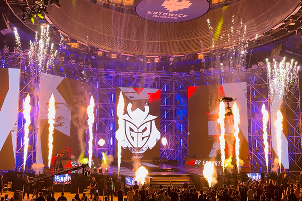
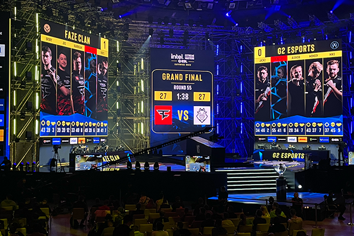

Intel Extreme Masters 2022 Katowice ▮▪
Another amazing event that definitely deserves its own article! I’ve had the chance to attend this tournament several times, and I even remember when League of Legends used to be played here. Unfortunately, those days are gone, and in the following years, the organizers focused mainly on Counter-Strike and StarCraft II. I always look forward to this tournament so much, because the atmosphere in the Spodek Arena is absolutely perfect I truly wish everyone could experience it. I believe it’s exactly this atmosphere that makes the tournament appealing even to visitors who don’t normally follow gaming that closely. Personally, I was really excited because I knew G2 would be playing, and I was hoping they’d win the whole tournament. Did they even make it to the finals? You’ll find out in this new article.
The car trip to Poland is long, but manageable. You know what’s waiting for you, so you’re excited and counting down the kilometers until you finally arrive. Once again, I had the honor of receiving a GUEST pass for this event, so I didn’t have to wait in any lines THANK YOU FOR THAT! :D Because seeing that crowd of fans, willing to stand outside in any kind of weather just to get in, is truly admirable.
I check into the hotel, pick up my badge, and off I go to the first matches! This tournament featured teams like NAVI, G2, FAZE Clan, Heroic, Gambit, and many others. From the very first second, you can feel the incredible atmosphere as fans cheer their teams forward. I have to admit I always only attend the Counter-Strike matches. I like StarCraft II as a game after all, it’s from my favorite studio,Blizzard but watching it competitively just isn’t really my thing.
The tournament spans several days, so there’s plenty of time to explore the city, and I always completely switch off my mind while I’m here. You’re “far enough away” from all work responsibilities, and I really try not to work at all just enjoy what I’ve loved since childhood. Games are a huge escape for me from all the daily work and stress, and they truly help me recharge. Plus, thanks to gaming, I’ve met so many great friends some of whom I’ve never even met in person, yet I trust them more than people I see regularly.

The big day has arrived the grand finale! The entire arena is filled with special effects, a stunning trophy for the winners, and fans all hoping their favorite team will take the title. My wish came true G2 made it to the finals against FAZE! It was an incredible nail-biter, but G2, including my favorite player M0NESY, lost in the finals 3–0. FAZE Clan became the champions, winning $400,000. The celebration was absolutely unbelievable. Every year I get goosebumps, and this time was no exception. A perfectly spent weekend and I felt as happy as a little kid.
After the celebrations, the fans slowly left the arena and returned to their hotels. I decided to drive home that same day, so it was quite a tough journey and if I remember correctly, I got home around three in the morning. I opened the door to my apartment, lay down in bed, and knew this was an experience I’d remember for the rest of my life.
THANK YOU, THANK YOU, THANK YOU! It was perfect!
Until next time…
Štefan
◀ Back to blog